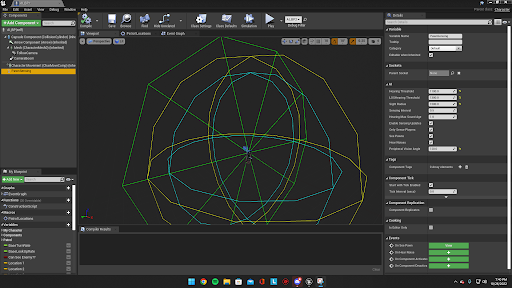

Escape Fate (a.k.a Project Fate) was group project, where I was the assistant project manager, that had a scope and deadline. Finished within 5 months, the project was completed in a playable state, with many of the essentials and goals we had set in mind. For this game, we discussed different elements to a horror game that makes them emotion inducing. We set some goals in mind for the game, including but not limited to, having dimly lit or dark corridors, slower movement, and a flashlight as to have the player feel limited with their visibility. We also wanted to have the level be designed in a way that made sense for the theme, so we looked at other media and real-life examples of houses that gave that sense of horror. From that research, we designed the level to have two floors with many rooms, that way it felt like the enemy chasing after you could be in any place. After discussing goals, we got to writing everything in our Software Project Management Plan (SPMP), a Software Requirement Specification (SRS), and starting a Gantt Chart.
Throughout the development of the game, I was consulted with by both my team members and the project manager, discussing ideas, decision-making, and goals for us to set down. We had set up weekly meetings for us to catch up, share new developments, and talk about further plans. To help the project manager, I created the Gantt chart as to track what was done each week, as well as the goals for us to complete. The first goal we had in mind was to make our first prototype, where we set out to make the initial version of the game, that although not entirely polished, had many of the core mechanics in it. This version had the initial UI/UX, the movement scripts, the collecting notes mechanic, and other systems to make the game functional.
AI Implementation
One of the big things that make a horror game truly terrifying is having an enemy that keeps the player constantly in fear. The development of the enemy took a lot of time and consideration. We decided on doing a fairly simple way of keeping the AI cover as much ground as possible as well as reacting to the player. The AI would simply follow a set point of coordinates on the map, going in a constant loop around the play area. The AI also had three different colliders, a sight detection (green collider), sound detection (blue collider), and line of sight detection (yellow collider). When the character would enter the sight detection, the AI would immediately start running for the player. If the player were to hide behind a wall or hide in a cabinet while in their sight detection collider, the monster would turn away and continue their path. If the player was to be within the line of sight, the monster would still chase them down, even if they tried to hide. This is where the sprint mechanic comes into play, as to get far away enough from them to hide. The final detection, the sound, would trigger the monster to instantly start to look for the player, following the footsteps the player makes. It will do so until the player is seen, or a time threshold of silence was met, then it would return to the original path. Although the monster would sometimes go in the wrong direction or not exactly know where the player was, especially when we introduced the second floor, the AI behaved almost exactly how we wanted it to.
Ending Thoughts
This project taught me two big important things, team coordination and software engineering tools and practices. Throughout the development, me and the project manager were constantly discussing ideas and ways to solve problems with the team. If a team member had an issue developing something, we would come in and help or figure out alternatives. Anything we discussed or changed within the game would be noted in some form or another, and to help track what each of were doing, we used Asana. This was an instrumental tool for us as it let all the team members know exactly what goals to accomplish, what had been done or was still in progress, and for us to help others on a certain issue they were having. Another important tool, GitHub, was used during development as to help keep version control and different branches for the members of the team to work on. Although we didn’t use it to the fullest potential, we still were able to manage each other through it. Tools like these helped us get good track time for the project and let us finish the main goals within the scope. To keep track of these, I would often update our Gantt chart, keep the SRS and SPMP updated to reflect all changes within the project. Overall, this project was a game I was proud of as I helped in many aspects of the development, whether it was helping other’s understand Unreal Engine’s blueprint system, helping discover assets and how to implement them, or designing different parts of the game. I was also proud of the way I documented the development process. The SRS, the SPMP, and Gantt chart are all documents that I have a good understanding of. Although we didn’t utilize it too much, we followed an Agile project management plan as that worked best for the team and the project at hand, using the scrum framework to help us as it worked best for our fixed-length project. While the scrum minutes and objectives were documented, the length and detail of them were a bit sporadic. The progress made on this project was instrumental into me understanding many of the processes of being a software engineer and game developer.